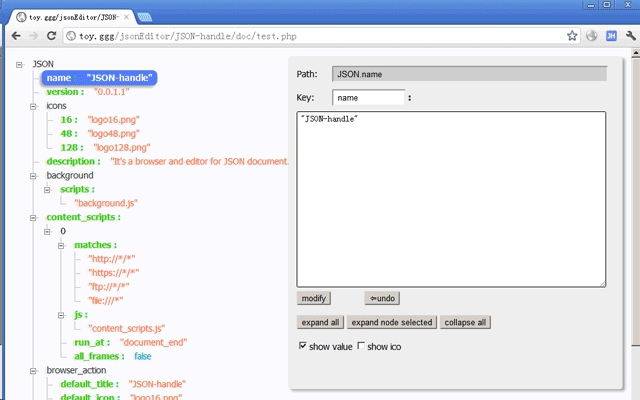

Chrome上 几个值得推荐的插件
推荐几款自己正在使用的插件，推荐等级与顺序无关。
1. Anything to QRcode
通过右键菜单或地址栏按钮将当前页面地址、选中的文本、链接、图片地址等文本内容生成二维码，也可以解析页面中的二维码图片，完全离线可用，不依赖任何远程文件和服务，内存占用小，不常驻后台，界面简洁，无广告。
作者用于测试 web 适配，当开发的网页需要用手机测试时，不再需要手动输入二维码，用此插件生成二维码后手机扫码访问即可。


2. Infinity 新标签页
Infinity新标签页，基于Chrome的云应用服务，让你更优雅、轻松地使用Chrome。
3. JSON-handle
对JSON格式的内容进行浏览和编辑，以树形图样式展现JSON文档，并可实时编辑。

4. Octotree
Extension to show code tree for GitHub.
Features:
- Easy-to-navigate code tree like IDEs
- Support private repositories
- Support GitHub Enterprise
Learn more about Octotree: https://github.com/ovity/octotree

5. Postman
Supercharge your API workflow with Postman!
Postman Chrome 插件已停用了，可下载 PC 客户端。下载

6. FeHelper
FE助手：包括JSON格式化、二维码生成与解码、信息编解码、代码压缩、美化、页面取色、Markdown与HTML互转、网页滚动截屏、正则表达式、时间转换工具、编码规范检测、页面性能检测、Ajax接口调试、密码生成器、JSON比对工具、网页编码设置、便签笔记